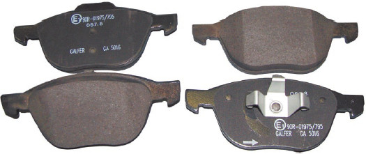
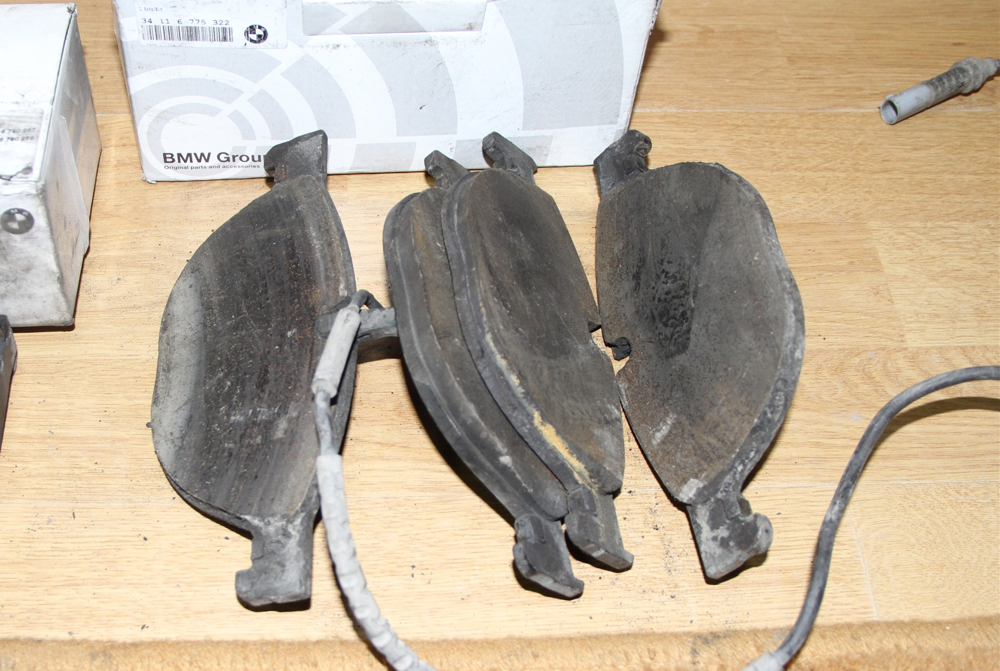

Вопрос: На моей машине заменили все тормозные колодки, после чего тормозить стало хуже, чем со старыми колодками. Я обратился на другую СТО, и там вновь заменили тормозные колодки (поставили уже другой новый комплект), но проблема осталась. Что делать?
Ответ: Вторая замена тормозных колодок явно была лишней. Падение эффективности рабочей тормозной системы в первое время после замены тормозных колодок является практически неизбежным. Это происходит из-за уменьшения контактной площади тормозных колодок и тормозных дисков: новые колодки ровные, а после приработки их рабочая поверхность принимает форму рабочей поверхности тормозного диска, и тогда увеличивается площадь контакта. Чтобы с самого начала не было проблем с ухудшением тормозной системы, можно заменять одновременно и тормозные колодки, и тормозные диски. Ну а если заменяются только колодки, то нужно просто подождать прирабатывания их к дискам.

Так выглядят новые тормозные колодки

А так выглядят старые тормозные колодки. Намотря на жуткий вид, они притерты к своим дискам.